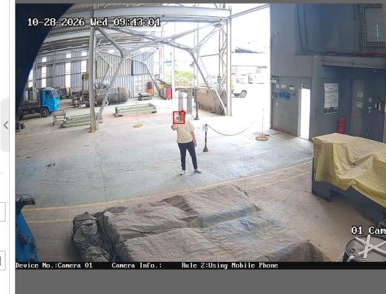
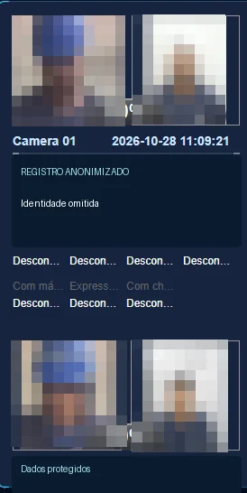

PROPOSTA DE SOLUÇÃO REPLICÁVEL
Do vídeo
à decisão.
Monitoramento inteligente de EPI, comportamento de risco e identificação assistida por IA.
VIDEO
ANALYTICS
ANALYTICS
03 / RESULTADOS
Três sinais de que
a tecnologia funciona.

01
Detecção de capacete
Eventos registrados.

02
Uso de celular
Detecção confirmada quando o aparelho está visível para a câmera.

03 REGISTROS GERADOS
Captura e comparação facial
VISION / INTELLIGENCE
SEGURANÇA OPERACIONAL COM IA
Transformar
pixels em prevenção.
Um piloto real como base para soluções sob medida — com evidência, contexto e responsabilidade.
01 Entender o ambiente
02 Definir a regra
03 Validar a solução